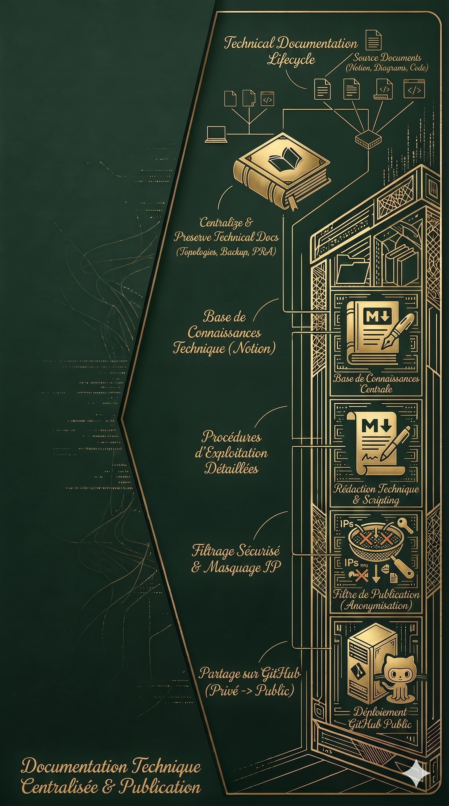

Réalisation 5 : Documentation de l'infrastructure personnelle
Contexte
Avec l'évolution constante de mon laboratoire (PVE2) et de mon environnement de production (PVE1), la quantité de services déployés a rapidement augmenté : routage pfSense, annuaire Active Directory, tunnels WireGuard, supervision, etc. Il devenait indispensable de structurer mes prises de notes initialement réalisées sur Notion. Ce projet est né de la volonté de créer une véritable base de connaissances centralisée, capable de tracer l'architecture de mon réseau et de détailler mes procédures de déploiement. Pour partager ce travail sans compromettre la sécurité de mon infrastructure, j'ai mis au point un système de publication qui filtre les données sensibles d'un dépôt privé vers un dépôt GitHub public.
Objectifs
- Centraliser et pérenniser la documentation technique de l'ensemble de l'infrastructure (topologies réseaux, stratégies de sauvegarde, PRA).
- Mettre en place un flux de publication sécurisé (dépôt privé vers dépôt public) garantissant l'anonymisation des adresses IP critiques et des informations sensibles.
- Rédiger des procédures d'exploitation et de configuration détaillées et reproductibles (création de cluster, certificats PKI, règles de pare-feu).
- Partager mon environnement d'apprentissage et mes maquettes avec d'autres étudiants ou professionnels via une plateforme accessible (GitHub).
Technologies utilisées
Compétences travaillées
Gérer le patrimoine informatique
- Recenser et identifier les ressources numériques
- Exploiter des référentiels, normes et standards adoptés par le prestataire informatique
Mettre à disposition des utilisateurs un service informatique
- Accompagner les utilisateurs dans la mise en place d'un service
Organiser son développement professionnel
- Gérer son identité professionnelle
- Mettre en place son environnement d'apprentissage personnel
- Développer son projet professionnel
Bilan
Ce projet de documentation m'a permis de franchir un cap dans ma rigueur technique. La nécessité d'expliquer clairement des concepts complexes (comme la liaison Site-to-Site ou la configuration d'un serveur de secours) m'a forcé à consolider mes propres acquis. Le défi technique de la sanitisation des données m'a également sensibilisé aux enjeux de la sécurité de l'information publique. Aujourd'hui, je dispose non seulement d'un support fiable pour reconstruire ou dépanner n'importe quel segment de mon laboratoire en toute autonomie, mais aussi d'une vitrine professionnelle démontrant ma méthode de travail.
